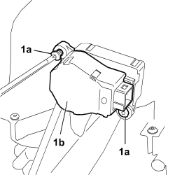

5040D88 CONTROL MOTOR OF ANY FLAP - R R WITH AIR CONDITIONER CASING REMOVED
- Path
- Procedures > 50 AUXILIARY UNITS > 5040 AIR CONDITIONING CASING AND COMPONENTS > 5040D AIR CONDITIONING CONTROLS > 5040D88 CONTROL MOTOR OF ANY FLAP - R R WITH AIR CONDITIONER CASING REMOVED
- Kind
- repair procedure (removal / refitting; the operation number is the code)
- Applies to
- all engines; all production periods
- Interactive page
- https://sloeber94.github.io/elrnDB-fCrm/en/#/194000637
Applies to: all engines; all production periods
 Removing
Removing
 Refitting
Refitting1. Undo the two fixing bolts (1a) and remove the motor (1b) from the air conditioning casing.

Applies to: all engines; all production periods
Refitting
Removing- Check that the control motor for the air conditioning flap is not damaged.
- Place the flap control motor in position.
- Tighten the two bolts fixing the flap control motor to the air conditioning casing and secure it.
- Check that the air conditioning is working properly.